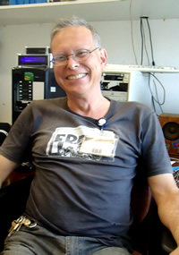

    <div id="content">
      <h1>Team Members - Alumni</h1>

      <div id="pessoal">
	
	<h4>Bruna Dayane Lemos Pinto</h4>
	<a href="http://lattes.cnpq.br/0937469516212669" target="_blank">Lattes (Curriculum)</a><br />
    <a href="http://www.teses.usp.br/teses/disponiveis/76/76132/tde-13092007-161530/" target="_blank">MSc</a><br />
      </div>

      <div id="pessoal">
	
	<h4>Boris Marin</h4>
	<a href="http://lattes.cnpq.br/5771367717353598" target="_blank">Lattes (Curriculum)</a><br />
    <a href="http://www.teses.usp.br/teses/disponiveis/43/43134/tde-23092014-154612/" target="_blank">PhD</a><br />
      </div>

      <div id="pessoal">
	
	<h4>Carlos Alessandro Silva dos Anjos</h4>
	<a href="http://lattes.cnpq.br/0274178450389594" target="_blank">Lattes (Curriculum)</a><br />
    <a href="http://www.teses.usp.br/teses/disponiveis/76/76132/tde-14082009-121606/" target="_blank">MSc</a><br />
      </div>

      <div id="pessoal">
	
	<h4>Carolina Menezes Silv&eacute;rio</h4>
	<a href="http://lattes.cnpq.br/5688057684907542" target="_blank">Lattes (Curriculum)</a><br />
    <a href="http://www.teses.usp.br/teses/disponiveis/76/76132/tde-30102013-111946/" target="_blank">MSc</a><br />
      </div>

      <div id="pessoal">
	
	<h4>Caroline Garcia Forlim</h4>
	<a href="http://lattes.cnpq.br/3862517946640069" target="_blank">Lattes (Curriculum)</a><br />
    <a href="http://www.teses.usp.br/teses/disponiveis/43/43134/tde-23102008-193008/" target="_blank">MSc</a> | <a href="http://www.teses.usp.br/teses/disponiveis/43/43134/tde-06102014-141437/" target="_blank">PhD</a><br />
      </div>

      <div id="pessoal">
	
	<h4>Deusdedit Lineu Spavieri J&uacute;nior</h4>
	<a href="http://lattes.cnpq.br/9474695031005694" target="_blank">Lattes (Curriculum)</a><br />
	<a href="https://scholar.google.com.br/citations?user=kW9IYdIAAAAJ&hl=pt-BR" target="_blank">Google Scholar</a><br />
    <a href="http://www.teses.usp.br/teses/disponiveis/76/76131/tde-20022014-172049/" target="_blank">MSc</a><br />
      </div>

      <div id="pessoal">
	
	<h4>Ingrid de Miranda Esteves</h4>
	<a href="http://lattes.cnpq.br/1192339099694959" target="_blank">Lattes (Curriculum)</a><br />
    <a href="http://www.teses.usp.br/teses/disponiveis/76/76132/tde-04102010-171911/" target="_blank">MSc</a><br />
      </div>

      <div id="pessoal">
	
	<h4>Jessica dos Santos</h4>
	<a href="http://lattes.cnpq.br/4000973947886533" target="_blank">Lattes (Curriculum)</a><br />
    <a href="http://www.teses.usp.br/teses/disponiveis/76/76132/tde-18092013-095713/" target="_blank">MSc</a><br />
      </div>

      <div id="pessoal">
	
	<h4>Lirio Onofre Baptista de Almeida</h4>
	<a href="http://lattes.cnpq.br/0543751699824674" target="_blank">Lattes (Curriculum)</a><br />
	<a href="https://scholar.google.com.br/citations?user=TPGmWvkAAAAJ&hl=pt-BR" target="_blank">Google Scholar</a> | <a href="https://www.researchgate.net/profile/Lirio_De_Almeida2" target="_blank">Research Gate</a><br />
    <a href="http://www.teses.usp.br/teses/disponiveis/76/76132/tde-29032007-105503/" target="_blank">MSc</a> | <a href="http://www.teses.usp.br/teses/disponiveis/76/76132/tde-19032013-155627/" target="_blank">PhD</a><br />
      </div>

      <div id="pessoal">
	
	<h4>Ludmila Brochini Rodrigues</h4>
	<a href="http://lattes.cnpq.br/9590654460597955" target="_blank">Lattes (Curriculum)</a><br />
	<a href="https://scholar.google.com.br/citations?user=CGJ79r8AAAAJ&hl=pt-BR" target="_blank">Google Scholar</a><br />
    <a href="http://www.teses.usp.br/teses/disponiveis/43/43134/tde-02052012-121542/" target="_blank">PhD</a><br />
      </div>

      <div id="pessoal">
	
	<h4>Marcelo Bussotti Reyes</h4>
	<a href="http://cmcc.ufabc.edu.br/index.php/docentes/93-marcelo-bussotti-reyes.html" target="_blank">Home Page</a><br />
	<a href="http://lattes.cnpq.br/2438114916781861" target="_blank">Lattes (Curriculum)</a><br />
	<a href="https://scholar.google.com.br/citations?user=lsLXkQ8AAAAJ&hl=pt-BR" target="_blank">Google Scholar</a> | <a href="https://www.researchgate.net/profile/Marcelo_Reyes" target="_blank">Research Gate</a><br />
    <a href="http://www.teses.usp.br/teses/disponiveis/43/43134/tde-10102009-100639/" target="_blank">PhD</a><br />
      </div>

      <div id="pessoal">
	
	<h4>Mario Alexandre Gazziro</h4>
	<a href="http://cecs.ufabc.edu.br/index.php/docentes/.../266-mario-alexandre-gazziro.html" target="_blank">Home Page</a><br />
	<a href="http://lattes.cnpq.br/8231236078666150" target="_blank">Lattes (Curriculum)</a><br />
	<a href="https://scholar.google.com.br/citations?user=ehRbHFQAAAAJ&hl=pt-BR" target="_blank">Google Scholar</a> | <a href="https://www.researchgate.net/profile/Mario_Gazziro" target="_blank">Research Gate</a><br />
    <a href="http://www.teses.usp.br/teses/disponiveis/76/76132/tde-28092009-091347/" target="_blank">PhD</a><br />
      </div>

      <div id="pessoal">
	
	<h4>Nataly Horner Hoe de Castro</h4>
	<a href="http://lattes.cnpq.br/2939691651074051" target="_blank">Lattes (Curriculum)</a><br />
    <a href="http://www.teses.usp.br/teses/disponiveis/76/76131/tde-16022011-080323/" target="_blank">MSc</a><br />
      </div>

      <div id="pessoal">
	
	<h4>Nelson Mesquita Fernandes</h4>
	<a href="http://lattes.cnpq.br/2645054840168018" target="_blank">Lattes (Curriculum)</a><br />
    <a href="http://www.teses.usp.br/teses/disponiveis/76/76131/tde-25032010-161256/" target="_blank">PhD</a><br />
      </div>

      <div id="pessoal">
	
	<h4>Pedro Valad&atilde;o Carelli</h4>
	<a href="https://www.ufpe.br/df/index.php?option=com_content&view=article&id=342%3Apedro-valadao-carelli&catid=31&Itemid=220" target="_blank">Home Page</a><br />
	<a href="http://lattes.cnpq.br/0869469262114149" target="_blank">Lattes (Curriculum)</a><br />
	<a href="https://scholar.google.com.br/citations?user=BCwp_L4AAAAJ&hl=pt-BR" target="_blank">Google Scholar</a> | <a href="https://www.researchgate.net/profile/Pedro_Carelli" target="_blank">Research Gate</a><br />
    <a href="http://www.teses.usp.br/teses/disponiveis/43/43134/tde-04092008-154828/" target="_blank">PhD</a><br />
      </div>

      <div id="pessoal">
	
	<h4>Rafael Giordano Viegas</h4>
	<a href="http://lattes.cnpq.br/0570465445611732" target="_blank">Lattes (Curriculum)</a><br />
    <a href="http://www.teses.usp.br/teses/disponiveis/76/76131/tde-19042011-100658/" target="_blank">MSc</a><br />
      </div>

      <div id="pessoal">
	
	<h4>Renata Fonseca de Morais Batista</h4>
	<a href="http://lattes.cnpq.br/4600441426587683" target="_blank">Lattes (Curriculum)</a><br />
    <a href="http://www.teses.usp.br/teses/disponiveis/76/76132/tde-10092013-111025/" target="_blank">MSc</a><br />
      </div>

      <div id="pessoal">
	
	<h4>Rodrigo Capobianco Guido</h4>
	<a href="http://www.ibilce.unesp.br/#!/departamentos/cienc-comp-estatistica/docentes/rodrigo-capobianco-guido/" target="_blank">Home Page</a><br />
	<a href="http://lattes.cnpq.br/6542086226808067" target="_blank">Lattes (Curriculum)</a><br />
	<a href="https://www.researchgate.net/profile/Rodrigo_Guido" target="_blank">Research Gate</a><br />
    <a href="http://www.teses.usp.br/teses/disponiveis/76/76132/tde-11092008-172109/" target="_blank">PhD</a><br />
      </div>

      <div id="pessoal">
	
	<h4>Rog&eacute;rio Mazur</h4>
	<a href="http://lattes.cnpq.br/0462346038195667" target="_blank">Lattes (Curriculum)</a><br />
    <a href="http://www.teses.usp.br/teses/disponiveis/43/43134/tde-08052007-135407/" target="_blank">MSc</a><br />
      </div>

    </div>
  </div>
